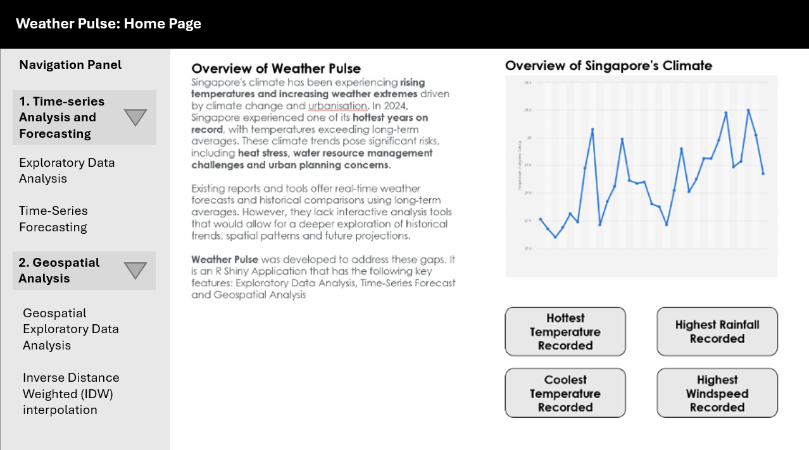
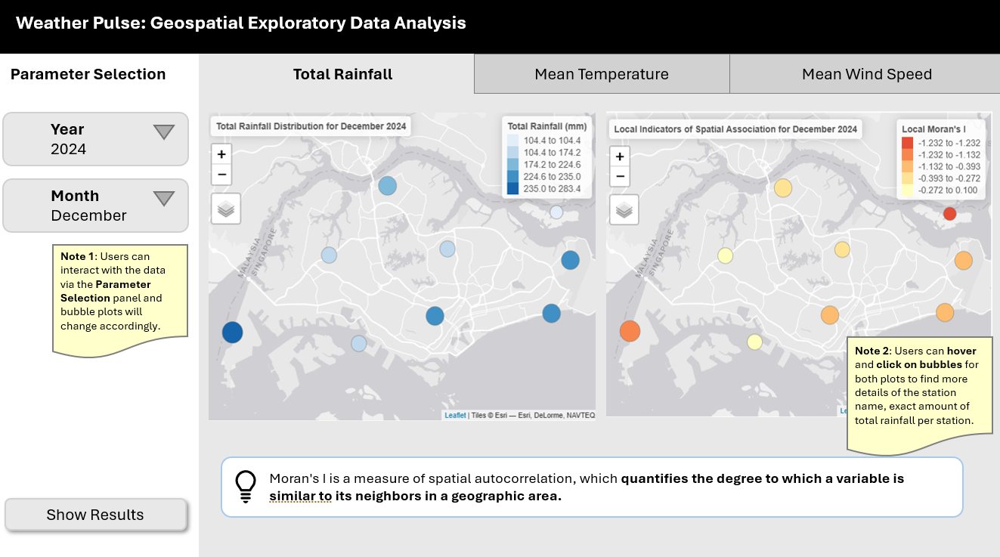
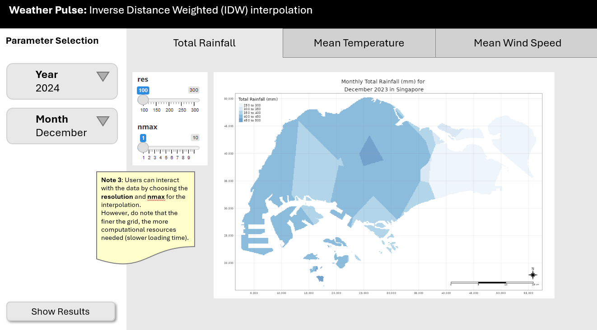

pacman::p_load(readxl, dplyr, readr, lubridate, sf,
tmap, DT, zoo, plotly, spdep, tidyverse,
sp, ggplot2)Take-home Exercise 3: Prototyping Modules for Visual Analytics Shiny Application
1 Overview of Task
In this take-home exercise, we are required to select one of the module of our proposed Shiny application and complete the following tasks:
To evaluate and determine the necessary R packages needed for your Shiny application are supported in R CRAN,
To prepare and test the specific R codes can be run and returned the correct output as expected,
To determine the parameters and outputs that will be exposed on the Shiny applications, and
To select the appropriate Shiny UI components for exposing the parameters determine above.
1️⃣ This take-home exercise must provide detail discussion and explanation of:
the data preparation process,
the selection of data visualisation techniques used,
and the data visualisation design and interactivity principles and best practices implemented.
2️⃣ It should also include a section called UI design for the different components of the UIs for the proposed design.
Our group has chosen to develop an interactive R Shiny application (Weather Pulse) designed to enhance the exploration and understanding of Singapore’s evolving climate by addressing gaps in historical trend analysis, spatial insights, and future projections.
2 Data Preparation
2.1 The Dataset
The dataset from MSS website features extensive historical daily records that include measurements of daily rainfall, temperature, and wind speed. These records are collected from 64 weather stations (active and closed) cross Singapore, covering a period from 1980 to 2025.
As the data is stored disparately on the website, segmented by both month and by weather station, it must be scraped from the website and consolidated into a single dataset to be effectively utilised.
R packages that will be used for the data scraping and consolidation process are listed below:
dplyr: This will be used in the data consolidation process as it offers functions for data manipulation and transformation.lubridate: This will be used for parsing, manipulating, and performing arithmetic on date-time objects.
2.2 Scraping climate data from MSS website
The goal of our R Shiny application is to examine and analyze weather trends in Singapore from 2020 to 2024. To achieve this, we will first scrape the data readings of 44 active weather stations (19 full AWS stations, 25 rainfall stations) across Singapore from the MSS website and then proceed with data wrangling.
Code blocks below initializes the data scraping process by reading a list of station codes from a CSV file and setting up a loop to download data for the specified years and months:
stations_df <- read_excel("data/StationList.xlsx")
station_codes <- stations_df$StationID
stations_df <- st_as_sf(stations_df, coords = c("Long", "Lat"), crs = 4326)
stations_df <- st_transform(stations_df, 3414)Code block to detail the main scraping loop:
Click to view full code for data scraping
years <- 2020:2024
months <- sprintf("%02d", 1:12)
base_url <- "https://www.weather.gov.sg/files/dailydata/DAILYDATA_%s_%d%s.csv"
all_data <- list()
i <- 1
invisible({
for (station in station_codes) {
for (year in years) {
for (month in months) {
url <- sprintf(base_url, station, year, month)
cat("Downloading:", url, "\n")
# Attempt to read with latin1, if it fails, try UTF-8
res <- try({
read_csv(url, locale = locale(encoding = "latin1"), show_col_types = FALSE)
}, silent = TRUE)
if (inherits(res, "try-error")) {
res <- try({
read_csv(url, locale = locale(encoding = "UTF-8"), show_col_types = FALSE)
}, silent = TRUE)
}
# If both fail, continue to the next file
if (inherits(res, "try-error")) {
cat("Failed to read:", url, "\n")
next
}
res <- res %>%
mutate(across(
contains(c("Temperature", "Rainfall", "Wind")),
~ suppressWarnings(as.numeric(.))
)) %>%
mutate(
station = as.character(station),
year = as.integer(year),
month = as.integer(month),
Day = as.integer(Day)
)
all_data[[i]] <- res
i <- i + 1
}
}
}
})
Important
The data from January 2020 to March 2020 are encoded in latin1, while the data starting from April 2020 are encoded in UTF-8. Therefore, it is essential for the main scraping loop to be robust enough to accommodate both encodings effectively.
2.3 Preparing Aspatial Data
2.3.1 Merging climate data and creating variables
Click to view code for combining extracted data and creating date column
climate_data <- bind_rows(all_data)
climate_data <- climate_data %>%
mutate(
date = make_date(year, month, Day)
)
write_csv(climate_data, "data/aspatial/climate_data.csv")climate_data <- read_csv("data/aspatial/climate_data.csv")Rows: 80388 Columns: 17
── Column specification ────────────────────────────────────────────────────────
Delimiter: ","
chr (2): Station, station
dbl (14): Year, Month, Day, Daily Rainfall Total (mm), Highest 30 Min Rainf...
date (1): date
ℹ Use `spec()` to retrieve the full column specification for this data.
ℹ Specify the column types or set `show_col_types = FALSE` to quiet this message.glimpse(climate_data)Rows: 80,388
Columns: 17
$ Station <chr> "Paya Lebar", "Paya Lebar", "Paya Leba…
$ Year <dbl> 2020, 2020, 2020, 2020, 2020, 2020, 20…
$ Month <dbl> 1, 1, 1, 1, 1, 1, 1, 1, 1, 1, 1, 1, 1,…
$ Day <dbl> 1, 2, 3, 4, 5, 6, 7, 8, 9, 10, 11, 12,…
$ `Daily Rainfall Total (mm)` <dbl> 0.0, 0.2, 0.0, 0.8, 0.0, 31.2, 1.8, 0.…
$ `Highest 30 Min Rainfall (mm)` <dbl> NA, NA, NA, NA, NA, NA, NA, NA, NA, NA…
$ `Highest 60 Min Rainfall (mm)` <dbl> NA, NA, NA, NA, NA, NA, NA, NA, NA, NA…
$ `Highest 120 Min Rainfall (mm)` <dbl> NA, NA, NA, NA, NA, NA, NA, NA, NA, NA…
$ `Mean Temperature (°C)` <dbl> 28.7, 28.5, 28.6, 28.0, 28.7, 27.3, 26…
$ `Maximum Temperature (°C)` <dbl> 32.3, 31.2, 32.2, 31.6, 33.2, 32.6, 30…
$ `Minimum Temperature (°C)` <dbl> 26.3, 26.4, 26.0, 25.4, 25.5, 24.0, 24…
$ `Mean Wind Speed (km/h)` <dbl> 20.2, 17.3, 18.0, 19.1, 20.2, 14.8, 15…
$ `Max Wind Speed (km/h)` <dbl> 46.4, 42.5, 46.4, 48.2, 38.9, 46.4, 44…
$ station <chr> "S06", "S06", "S06", "S06", "S06", "S0…
$ year <dbl> 2020, 2020, 2020, 2020, 2020, 2020, 20…
$ month <dbl> 1, 1, 1, 1, 1, 1, 1, 1, 1, 1, 1, 1, 1,…
$ date <date> 2020-01-01, 2020-01-02, 2020-01-03, 2…2.3.2 Separating data into 3 datasets - rainfall, temperature and wind speed
To facilitate the development of the R Shiny application, the weather data was split into three separate datasets — rainfall, temperature, and wind speed. Each dataset contains only the relevant variables for the respective weather parameter, alongside essential metadata such as station name, date, and time components.
By isolating each weather component, users can independently explore trends, seasonality, and anomalies for rainfall, temperature, and wind speed. Additionally, this approach simplifies backend logic, improves processing efficiency, and avoids unnecessary overhead from unrelated columns during visualisation and analysis.
climate_rainfall <- climate_data %>%
select(Station, Year, Month, Day, date, station, year, month,
contains("Rainfall"))
climate_temperature <- climate_data %>%
select(Station, Year, Month, Day, date, station, year, month,
contains("Temperature"))
climate_windspeed <- climate_data %>%
select(Station, Year, Month, Day, date, station, year, month,
contains("Wind"))2.4 Checking for Missing Data
2.4.1 Checking for missing values in datasets
Code blocks below identify and calculate the percentage of missing values for each of the weather variable dataset:
Click to view code
rainfall_missing_by_station <- climate_rainfall %>%
group_by(station) %>%
summarise(across(
contains("Rainfall"),
~mean(is.na(.)) * 100,
.names = "missing_{.col}"
)) %>%
arrange(across(starts_with("missing"), desc))
rainfall_missing_by_station# A tibble: 44 × 5
station missing_Daily Rainfal…¹ missing_Highest 30 M…² missing_Highest 60 M…³
<chr> <dbl> <dbl> <dbl>
1 S29 17.4 19.4 19.4
2 S92 11.8 12.7 12.8
3 S64 7.72 7.83 7.77
4 S60 4.05 4.49 4.49
5 S108 3.56 4.49 4.54
6 S112 3.50 4.05 4.11
7 S69 3.45 3.83 3.89
8 S123 3.34 3.61 3.67
9 S114 3.12 3.45 3.50
10 S35 3.07 4.00 4.05
# ℹ 34 more rows
# ℹ abbreviated names: ¹`missing_Daily Rainfall Total (mm)`,
# ²`missing_Highest 30 Min Rainfall (mm)`,
# ³`missing_Highest 60 Min Rainfall (mm)`
# ℹ 1 more variable: `missing_Highest 120 Min Rainfall (mm)` <dbl>
Important
Based on the missing values analysis for the rainfall dataset, a few weather stations exhibit a significantly higher proportion of missing data (more than 5% of missing data), hence should be excluded from the analysis. This is because it may lead to biased trends and unreliable forecasts.
From the rainfall dataset, we have identified that weather stations S29, S92, S64 and S06 should be excluded from the analysis.
Click to view code
temperature_missing_by_station <- climate_temperature %>%
group_by(station) %>%
summarise(across(
contains("Temperature"),
~mean(is.na(.)) * 100,
.names = "missing_{.col}"
)) %>%
arrange(across(starts_with("missing"), desc))
temperature_missing_by_station# A tibble: 44 × 4
station missing_Mean Temperat…¹ missing_Maximum Temp…² missing_Minimum Temp…³
<chr> <dbl> <dbl> <dbl>
1 S07 100 100 100
2 S08 100 100 100
3 S112 100 100 100
4 S113 100 100 100
5 S114 100 100 100
6 S119 100 100 100
7 S123 100 100 100
8 S29 100 100 100
9 S33 100 100 100
10 S35 100 100 100
# ℹ 34 more rows
# ℹ abbreviated names: ¹`missing_Mean Temperature (°C)`,
# ²`missing_Maximum Temperature (°C)`, ³`missing_Minimum Temperature (°C)`
Important
Based on the missing values analysis for the temperature dataset, a few weather stations exhibit a significantly higher proportion of missing data (more than 5% of missing data), hence should be excluded from the analysis. This is because it may lead to biased trends and unreliable forecasts.
From the temperature dataset, we have identified that weather stations S07, S08, S112, S113, S114, S119, S123, S29, S33, S35, S40, S64, S66, S69, S71, S77, S78, S79, S81, S84, S88, S89, S90, S92, S94, S108, S23, S80, S25 and S06 should be excluded from the analysis.
Click to view code
windspeed_missing_by_station <- climate_windspeed %>%
group_by(station) %>%
summarise(across(
contains("Wind"),
~mean(is.na(.)) * 100,
.names = "missing_{.col}"
)) %>%
arrange(across(starts_with("missing"), desc))
windspeed_missing_by_station# A tibble: 44 × 3
station `missing_Mean Wind Speed (km/h)` `missing_Max Wind Speed (km/h)`
<chr> <dbl> <dbl>
1 S07 100 100
2 S08 100 100
3 S112 100 100
4 S113 100 100
5 S114 100 100
6 S119 100 100
7 S123 100 100
8 S29 100 100
9 S33 100 100
10 S35 100 100
# ℹ 34 more rows
Important
Based on the missing values analysis for the windspeed dataset, a few weather stations exhibit a significantly higher proportion of missing data (more than 5% of missing data), hence should be excluded from the analysis. This is because it may lead to biased trends and unreliable forecasts.
From the temperature dataset, we have identified that weather stations S07, S08, S112, S113, S114, S119, S123, S29, S33, S35, S40, S64, S66, S69, S71, S77, S78, S79, S81, S84, S88, S89, S90, S92, S94, S80, S23, S60, S44, S50, S43 and S117 should be excluded from the analysis.
2.4.2 Filtering datasets and employing linear interpolation
For the purpose of analysis and the UI design, we should exclude the weather stations S07, S08, S112, S113, S114, S119, S123, S29, S33, S35, S40, S64, S66, S69, S71, S77, S78, S79, S81, S84, S88, S89, S90, S92, S94, S80, S23, S60, S44, S50, S43, S117, S108, S25 and S06.
Apart from that, we employ linear interpolation to estimate the missing values for the weather stations with <5% missing data, assuming a linear relationship between two known data points. This method is effective for datasets where changes between consecutive data points are expected to be gradual / linear (i.e. weather parameters).
Filtering weather stations for analysis (final = 9 automated weather stations):
stations_filtered <- stations_df %>%
filter(!StationID %in% c("S07", "S08", "S112", "S113", "S114", "S119", "S123", "S29", "S33", "S35", "S40", "S64", "S66", "S69", "S71", "S77", "S78", "S79", "S81", "S84", "S88", "S89", "S90", "S92", "S94", "S80", "S23", "S60", "S44", "S50", "S43", "S117", "S108", "S25", "S06"))Linear interpolation for missing values:
Click to view code
climate_rainfall_interpolated <- climate_rainfall %>%
inner_join(stations_filtered, by = c("station" = "StationID")) %>%
arrange(station, date) %>%
group_by(station) %>%
mutate(
`Daily Rainfall Total (mm)` = na.approx(`Daily Rainfall Total (mm)`, x = date, na.rm = FALSE),
`Highest 30 Min Rainfall (mm)` = na.approx(`Highest 30 Min Rainfall (mm)`, x = date, na.rm = FALSE),
`Highest 60 Min Rainfall (mm)` = na.approx(`Highest 60 Min Rainfall (mm)`, x = date, na.rm = FALSE),
`Highest 120 Min Rainfall (mm)` = na.approx(`Highest 120 Min Rainfall (mm)`, x = date, na.rm = FALSE)
) %>%
ungroup()
climate_rainfall_interpolated# A tibble: 16,443 × 15
Station Year Month Day date station year month
<chr> <dbl> <dbl> <dbl> <date> <chr> <dbl> <dbl>
1 Admiralty 2020 1 1 2020-01-01 S104 2020 1
2 Admiralty 2020 1 2 2020-01-02 S104 2020 1
3 Admiralty 2020 1 3 2020-01-03 S104 2020 1
4 Admiralty 2020 1 4 2020-01-04 S104 2020 1
5 Admiralty 2020 1 5 2020-01-05 S104 2020 1
6 Admiralty 2020 1 6 2020-01-06 S104 2020 1
7 Admiralty 2020 1 7 2020-01-07 S104 2020 1
8 Admiralty 2020 1 8 2020-01-08 S104 2020 1
9 Admiralty 2020 1 9 2020-01-09 S104 2020 1
10 Admiralty 2020 1 10 2020-01-10 S104 2020 1
# ℹ 16,433 more rows
# ℹ 7 more variables: `Daily Rainfall Total (mm)` <dbl>,
# `Highest 30 Min Rainfall (mm)` <dbl>, `Highest 60 Min Rainfall (mm)` <dbl>,
# `Highest 120 Min Rainfall (mm)` <dbl>, StationType <chr>,
# StationName <chr>, geometry <POINT [m]>Click to view code
climate_temperature_interpolated <- climate_temperature %>%
inner_join(stations_filtered, by = c("station" = "StationID")) %>%
arrange(station, date) %>%
group_by(station) %>%
mutate(
`Mean Temperature (°C)` = na.approx(`Mean Temperature (°C)`, x = date, na.rm = FALSE),
`Maximum Temperature (°C)` = na.approx(`Maximum Temperature (°C)`, x = date, na.rm = FALSE),
`Minimum Temperature (°C)` = na.approx(`Minimum Temperature (°C)`, x = date, na.rm = FALSE)
) %>%
ungroup()
climate_temperature_interpolated# A tibble: 16,443 × 14
Station Year Month Day date station year month
<chr> <dbl> <dbl> <dbl> <date> <chr> <dbl> <dbl>
1 Admiralty 2020 1 1 2020-01-01 S104 2020 1
2 Admiralty 2020 1 2 2020-01-02 S104 2020 1
3 Admiralty 2020 1 3 2020-01-03 S104 2020 1
4 Admiralty 2020 1 4 2020-01-04 S104 2020 1
5 Admiralty 2020 1 5 2020-01-05 S104 2020 1
6 Admiralty 2020 1 6 2020-01-06 S104 2020 1
7 Admiralty 2020 1 7 2020-01-07 S104 2020 1
8 Admiralty 2020 1 8 2020-01-08 S104 2020 1
9 Admiralty 2020 1 9 2020-01-09 S104 2020 1
10 Admiralty 2020 1 10 2020-01-10 S104 2020 1
# ℹ 16,433 more rows
# ℹ 6 more variables: `Mean Temperature (°C)` <dbl>,
# `Maximum Temperature (°C)` <dbl>, `Minimum Temperature (°C)` <dbl>,
# StationType <chr>, StationName <chr>, geometry <POINT [m]>Click to view code
climate_windspeed_interpolated <- climate_windspeed %>%
inner_join(stations_filtered, by = c("station" = "StationID")) %>%
arrange(station, date) %>%
group_by(station) %>%
mutate(
`Mean Wind Speed (km/h)` = na.approx(`Mean Wind Speed (km/h)`, x = date, na.rm = FALSE),
`Max Wind Speed (km/h)` = na.approx(`Max Wind Speed (km/h)`, x = date, na.rm = FALSE)
) %>%
ungroup()
climate_windspeed_interpolated# A tibble: 16,443 × 13
Station Year Month Day date station year month
<chr> <dbl> <dbl> <dbl> <date> <chr> <dbl> <dbl>
1 Admiralty 2020 1 1 2020-01-01 S104 2020 1
2 Admiralty 2020 1 2 2020-01-02 S104 2020 1
3 Admiralty 2020 1 3 2020-01-03 S104 2020 1
4 Admiralty 2020 1 4 2020-01-04 S104 2020 1
5 Admiralty 2020 1 5 2020-01-05 S104 2020 1
6 Admiralty 2020 1 6 2020-01-06 S104 2020 1
7 Admiralty 2020 1 7 2020-01-07 S104 2020 1
8 Admiralty 2020 1 8 2020-01-08 S104 2020 1
9 Admiralty 2020 1 9 2020-01-09 S104 2020 1
10 Admiralty 2020 1 10 2020-01-10 S104 2020 1
# ℹ 16,433 more rows
# ℹ 5 more variables: `Mean Wind Speed (km/h)` <dbl>,
# `Max Wind Speed (km/h)` <dbl>, StationType <chr>, StationName <chr>,
# geometry <POINT [m]>
Important
To check for completeness of data, each dataset should have 16,443 observations for 9 weather stations and 5 full years of data (from 2020 to 2024).
[365 days x 5 years + 2 days*] x 9 stations = 16,443 observations
*Year 2020 and 2024 are leap years
2.5 Preparing Geospatial Data
In order to visualize the climate data on the map of Singapore for geospatial analysis, we will first need to transform the data and map the 9 weather station points to the SVY21 system.
climate_rainfall3414 <- st_as_sf(climate_rainfall_interpolated, crs = 3414)
climate_temperature3414 <- st_as_sf(climate_temperature_interpolated, crs = 3414)
climate_windspeed3414 <- st_as_sf(climate_windspeed_interpolated, crs = 3414)3 Geospatial Exploratory Data Analysis
3.1 Bubble Map - Visualising Weather Variables
Before going into the actual UI design of the Shiny app for geospatial analysis, we will first develop the function which will allow users to select and interact with the following parameters:
| Parameter | Description | UI for Parameter Selection |
|---|---|---|
Year |
The year from which the data is drawn. | Dropdown List |
Month |
The month from which the data is drawn. | Dropdown List |
There will be 3 functions created namely for (i) monthly total rainfall, (ii) average temperature and (iii) average windspeed which will all output interactive plots that will visually show the distribution of weather variables across Singapore.
3.1.1 Function to visualise monthly total rainfall
Click to view code block for function to calculate monthly total rainfall
plot_rainfall_map <- function(data, year, month) {
data <- data %>%
group_by(Station, Year = year(date), Month = month(date, label = TRUE, abbr = FALSE)) %>%
summarise(Total_Rainfall = sum(`Daily Rainfall Total (mm)`, na.rm = TRUE), .groups = "drop")
filtered_data <- data %>%
filter(Year == year, Month == month)
sf_data <- st_as_sf(filtered_data, coords = c("Longitude", "Latitude"), crs = 3414)
tmap_mode("view")
map <- tm_shape(sf_data) +
tm_bubbles(size = "Total_Rainfall", col = "Total_Rainfall",
scale = 4, style = "jenks", palette = "Blues",
title.size = "Total Rainfall (mm)",
title.col = "Total Rainfall (mm)",
popup.vars = c("Station")) +
tm_layout(title = paste("Total Rainfall Distribution for", month, year))
return(map)
}plot_rainfall_map(climate_rainfall3414, 2024, "December")tmap mode set to interactive viewingLegend for symbol sizes not available in view mode.3.1.2 Function to visualise average monthly temperature
Click to view code block for function to calculate average monthly temperature
plot_temp_map <- function(data, year, month) {
data <- data %>%
group_by(Station, Year = year(date), Month = month(date, label = TRUE, abbr = FALSE)) %>%
summarise(Avg_Temp = mean(`Mean Temperature (°C)`, na.rm = TRUE), .groups = "drop")
filtered_data <- data %>%
filter(Year == year, Month == month)
sf_data <- st_as_sf(filtered_data, coords = c("Longitude", "Latitude"), crs = 3414)
tmap_mode("view")
map <- tm_shape(sf_data) +
tm_bubbles(size = "Avg_Temp", col = "Avg_Temp",
scale = 4, style = "jenks", palette = "Reds",
title.size = "Average Temperature (°C)",
title.col = "Average Temperature (°C)",
popup.vars = c("Station")) +
tm_layout(title = paste("Average Temperature for", month, year))
return(map)
}plot_temp_map(climate_temperature3414, 2024, "December")tmap mode set to interactive viewingLegend for symbol sizes not available in view mode.3.1.3 Function to visualise average monthly wind speed
Click to view code block for function to calculate average monthly windspeed
plot_wind_map <- function(data, year, month) {
data <- data %>%
group_by(Station, Year = year(date), Month = month(date, label = TRUE, abbr = FALSE)) %>%
summarise(Avg_Wind = mean(`Mean Wind Speed (km/h)`, na.rm = TRUE), .groups = "drop")
filtered_data <- data %>%
filter(Year == year, Month == month)
sf_data <- st_as_sf(filtered_data, coords = c("Longitude", "Latitude"), crs = 3414)
tmap_mode("view")
map <- tm_shape(sf_data) +
tm_bubbles(size = "Avg_Wind", col = "Avg_Wind",
scale = 4, style = "jenks", palette = "Greens",
title.size = "Average Wind Speed (km/h)",
title.col = "Average Wind Speed (km/h)",
popup.vars = c("Station")) +
tm_layout(title = paste("Average Wind Speed for", month, year))
return(map)
}plot_wind_map(climate_windspeed3414, 2024, "December")tmap mode set to interactive viewingLegend for symbol sizes not available in view mode.3.2 Spatial autocorrelation - Local Moran’s I
Moran’s I is a measure of spatial autocorrelation, which quantifies the degree to which a variable is similar to its neighbors in a geographic area. It is often used in spatial statistics to assess patterns of clustering or dispersion in spatial data.
Local Moran’s I (also known as Local Indicators of Spatial Association - LISA) will further identify any localized clusters or outliers in the data.
Important
Local Moran’s I > 0 indicates that similar values are clustered together in space. In other words, if the value of a variable at one location is high, nearby locations are likely to have high values as well.
Local Moran’s I = 0 indicates random spatial autocorrelation, meaning that the values are randomly distributed.
Local Moran’s I < 0 indicates spatial dissimilarity — locations with high values of the variable are surrounded by locations with low values, or vice versa.
3.2.1 Function to visualise spatial association for rainfall
Click to view code block for functions to calculate and plot LISA
localmoran_i_rainfall <- function(data, year, month, k_neighbors = 2) {
data <- data %>%
group_by(Station, Year = year(date), Month = month(date, label = TRUE, abbr = FALSE)) %>%
summarise(Total_Rainfall = sum(`Daily Rainfall Total (mm)`, na.rm = TRUE), .groups = "drop")
filtered_data <- data %>%
filter(Year == year, Month == month)
sf_data <- st_as_sf(filtered_data, coords = c("Longitude", "Latitude"), crs = 3414)
coordinates <- st_coordinates(sf_data)
coordinates <- as.data.frame(coordinates)
coordinates[] <- lapply(coordinates, as.numeric)
neighbors <- knearneigh(coordinates, k = k_neighbors)
weights <- nb2listw(knn2nb(neighbors), style = "W")
variable <- filtered_data$Total_Rainfall
local_moran_result <- localmoran(variable, weights)
filtered_data$Local_Moran_I <- local_moran_result[, 1]
sf_data$Local_Moran_I <- filtered_data$Local_Moran_I
return(sf_data)
}
plot_rainfall_map <- function(data, year, month, k_neighbors = 2) {
tmap_mode("view")
rainfall_map <- tm_shape(data) +
tm_bubbles(size = "Total_Rainfall", col = "Local_Moran_I",
scale = 4, style = "jenks", palette = "RdYlBu",
title.size = "Local Moran's I",
title.col = "Local Moran's I",
popup.vars = c("Station", "Total_Rainfall","Local_Moran_I")) +
tm_layout(title = paste("Local Indicators of Spatial Association for", month, year))
return(rainfall_map)
}Click to view code for printing summary table
rainfall_map_data <- localmoran_i_rainfall(climate_rainfall3414, 2024, "December")Warning in knn2nb(neighbors): neighbour object has 2 sub-graphsClick to view code for printing summary table
rainfall_map_selected <- rainfall_map_data %>%
st_drop_geometry() %>%
select(Station, Total_Rainfall, Local_Moran_I)
print(rainfall_map_selected)# A tibble: 9 × 3
Station Total_Rainfall Local_Moran_I
<chr> <dbl> <dbl>
1 Admiralty 225. -0.272
2 Ang Mo Kio 174. -0.293
3 Changi 234. -0.408
4 Choa Chu Kang (South) 168. 0.100
5 East Coast Parkway 235 -0.420
6 Newton 233. -0.393
7 Pasir Panjang 166. 0.0291
8 Pulau Ubin 104. -1.23
9 Tuas South 283. -1.13 plot_rainfall_map(rainfall_map_data, 2024, "December")tmap mode set to interactive viewingVariable(s) "Local_Moran_I" contains positive and negative values, so midpoint is set to 0. Set midpoint = NA to show the full spectrum of the color palette.Legend for symbol sizes not available in view mode.
Warning
As the geospatial data studied is from limited number of weather stations, the spatial correlation results may not be accurate as the spatial points are spread out across the country with similar distance between each other (i.e. not a good analysis to find out if geospatial distance have an impact on the weather variables).
3.3 Inverse Distance Weighted (IDW) interpolation
Inverse Distance Weighted (IDW) interpolation is a spatial interpolation technique used to estimate values at unknown locations based on nearby observed data points. It assumes that points closer to the unknown location have a greater influence on the estimated value than points farther away.
3.3.1 Loading Packages and Boundary Shapefile
pacman::p_load(gstat)Click to view code for loading Singapore boundary shapefile
mpsz <- st_read(dsn = "data/geospatial",
layer = "MP14_SUBZONE_WEB_PL")Reading layer `MP14_SUBZONE_WEB_PL' from data source
`D:\2. SMU - MITB\Term 5\ISSS608 Visual\YX-Leng\ISSS608-VisualAnalytics\Take-home_Ex\Take-home_Ex03\data\geospatial'
using driver `ESRI Shapefile'
Simple feature collection with 323 features and 15 fields
Geometry type: MULTIPOLYGON
Dimension: XY
Bounding box: xmin: 2667.538 ymin: 15748.72 xmax: 56396.44 ymax: 50256.33
Projected CRS: SVY21Click to view code for loading Singapore boundary shapefile
mpsz <- st_transform(mpsz, crs = 3414)
st_crs(mpsz)Coordinate Reference System:
User input: EPSG:3414
wkt:
PROJCRS["SVY21 / Singapore TM",
BASEGEOGCRS["SVY21",
DATUM["SVY21",
ELLIPSOID["WGS 84",6378137,298.257223563,
LENGTHUNIT["metre",1]]],
PRIMEM["Greenwich",0,
ANGLEUNIT["degree",0.0174532925199433]],
ID["EPSG",4757]],
CONVERSION["Singapore Transverse Mercator",
METHOD["Transverse Mercator",
ID["EPSG",9807]],
PARAMETER["Latitude of natural origin",1.36666666666667,
ANGLEUNIT["degree",0.0174532925199433],
ID["EPSG",8801]],
PARAMETER["Longitude of natural origin",103.833333333333,
ANGLEUNIT["degree",0.0174532925199433],
ID["EPSG",8802]],
PARAMETER["Scale factor at natural origin",1,
SCALEUNIT["unity",1],
ID["EPSG",8805]],
PARAMETER["False easting",28001.642,
LENGTHUNIT["metre",1],
ID["EPSG",8806]],
PARAMETER["False northing",38744.572,
LENGTHUNIT["metre",1],
ID["EPSG",8807]]],
CS[Cartesian,2],
AXIS["northing (N)",north,
ORDER[1],
LENGTHUNIT["metre",1]],
AXIS["easting (E)",east,
ORDER[2],
LENGTHUNIT["metre",1]],
USAGE[
SCOPE["Cadastre, engineering survey, topographic mapping."],
AREA["Singapore - onshore and offshore."],
BBOX[1.13,103.59,1.47,104.07]],
ID["EPSG",3414]]Click to view code for setting minimum and maximum for interpolation random points
bbox <- st_bbox(mpsz)
bbox <- st_transform(bbox, crs = 3414)
lon_min <- bbox["xmin"]
lon_max <- bbox["xmax"]
lat_min <- bbox["ymin"]
lat_max <- bbox["ymax"]3.3.2 IDW interpolation function for total rainfall
Click to view code block for function - rainfall
generate_idw_rainfall <- function(data, resolution, nmax) {
set.seed(123)
# Calculate the number of random points based on resolution
n_points <- ceiling((lon_max - lon_min) / resolution) * ceiling((lat_max - lat_min) / resolution)
# Generate random points within the bounding box
random_points <- data.frame(
X = runif(n_points, lon_min, lon_max),
Y = runif(n_points, lat_min, lat_max)
)
# Convert these random points to an sf object with the correct CRS
random_points_sf <- st_as_sf(random_points, coords = c("X", "Y"), crs = 3414)
# Perform IDW interpolation using the provided climate data
idw_rainfall_random <- idw(formula = Daily.Rainfall.Total..mm. ~ 1,
locations = data,
newdata = random_points_sf,
nmax = nmax) # Set nmax for interpolation
# Convert the IDW results into a spatial object
coords <- st_coordinates(idw_rainfall_random)
idw_rainfall_sf <- cbind(idw_rainfall_random, coords)
idw_rainfall_sf <- st_as_sf(idw_rainfall_sf, coords = c("X", "Y"), crs = 3414)
# Clip points to Singapore boundary
idw_rainfall_sf <- idw_rainfall_sf[mpsz, ]
# Visualize the result using tmap
tmap_mode("view")
map <- tm_shape(idw_rainfall_sf) +
tm_bubbles(col = "var1.pred",
size = "var1.pred",
scale = 4, style = "jenks", palette = "Blues",
border.col = "black",
border.lwd = 0.5) +
tm_layout(
title = "Interpolated Rainfall at Random Points in Singapore",
frame = TRUE,
frame.lwd = 2,
title.size = 1.5
)
# Return the map object and the interpolation result
return(list(map = map, idw_result = idw_rainfall_sf))
}To convert climate_rainfall to sf object with the same crs :
Click to view code
climate_rainfall3414 <- st_as_sf(climate_rainfall3414, coords = c("X", "Y"), crs = 3414)
inherits(climate_rainfall3414, "sf") [1] TRUEPlot the IDW interpolation map:
results <- generate_idw_rainfall(climate_rainfall3414, resolution = 5000, nmax = 5)[inverse distance weighted interpolation]tmap mode set to interactive viewingresults$mapLegend for symbol sizes not available in view mode.
$idw_result
Simple feature collection with 35 features and 4 fields
Geometry type: POINT
Dimension: XY
Bounding box: xmin: 3990.004 ymin: 20658.96 xmax: 54409.77 ymax: 49737.24
Projected CRS: SVY21 / Singapore TM
First 10 features:
var1.pred var1.var X Y geometry
1 0.88 NA 18118.762 36893.99 POINT (18118.76 36893.99)
5 0.00 NA 53197.813 38801.72 POINT (53197.81 38801.72)
6 0.12 NA 5115.239 30160.71 POINT (5115.239 30160.71)
7 0.32 NA 31042.066 42947.48 POINT (31042.07 42947.48)
9 0.64 NA 32295.536 30755.83 POINT (32295.54 30755.83)
10 1.44 NA 27200.946 49737.24 POINT (27200.95 49737.24)
12 1.44 NA 27024.684 46338.65 POINT (27024.68 46338.65)
15 0.88 NA 8197.568 38285.71 POINT (8197.568 38285.71)
17 0.88 NA 15889.562 38411.88 POINT (15889.56 38411.88)
20 0.00 NA 53951.971 42743.83 POINT (53951.97 42743.83)4 UI Prototype Design
4.1 Home Page

4.2 Geospatial Exploratory Data Analysis

4.3 Inverse Distance Weighted (IDW) interpolation
